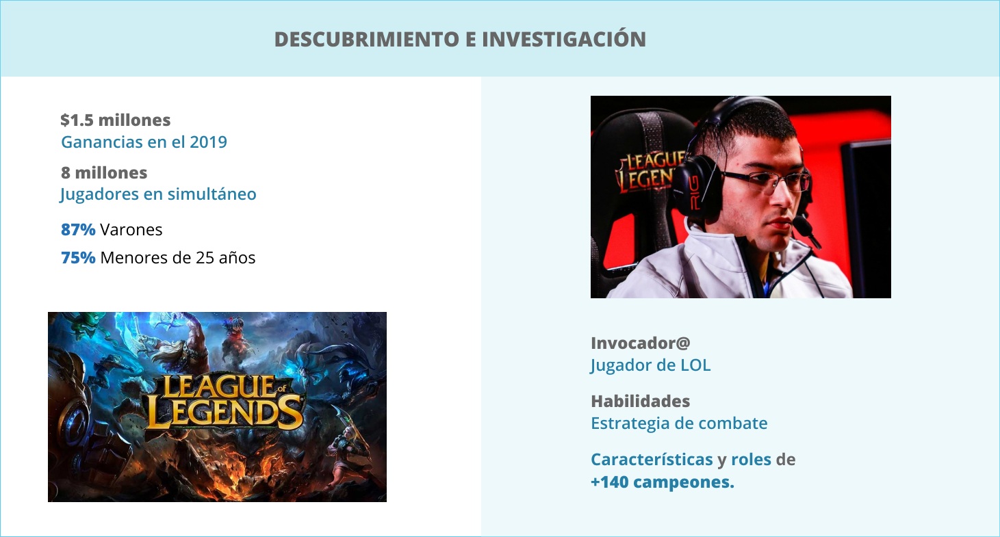

WikiLol
- Categoría: Diseño y desarrollo de app
- Cliente: Laboratoria
- Fecha: Abril, 2020
- URL: www.wikilol.com
Reto: Construir una interfaz amigable responsive a partir de data, con opciones de filtro y buscador.
Producto: WikiLol es una aplicación fácil y sencilla que permite iniciarse en el mundo de League of Legends. A través de esta app podrán conocer a los campeones de LOL, hacer una búsqueda, identificar su rol, conocer sus características y así convertirse en invocadores.
PROCESS
HUMAN CENTER DESIGN
Research
Screener survey
Benchmark
Entrevistas
Definition
Affinty Map
User Persona
Journey
Insights
Ideation
Sketch
Brain storming
User Flow
Prototype
Prototipado
Testing
Pruebas de usabilidad
RESEARCH
Para iniciarse en el juego y convertirse en invocador@ de League of Legends es de vital importancia conocer y elegir a los campeones estratégicamente, esto con la finalidad de ganar las partidas y sobre todo divertirse. Como el universo de LOL es enorme y cuenta con más de 140 campeones, hemos entrevistado a jugadores principiantes y experimentados del juego para conocer sus perspectivas al momento de elegir a sus campeones.
Benchmark
Definition
Hallazgos del sondeo.
- - El 100% de las personas encuestadas conocía el juego
- - El 40% eran jugadores habituales.
- - Los jugadores habituales consideran que es importante conocer el rol de los campeones.
- - Cuando eran principiantes los jugadores habituales por lo general elegían a sus campeones en función a recomendaciones de otros jugadores.

Ideation
Para esta etapa se realizó un Brainstorming que nos permitió consolidar la idea del producto, el cual consiste en una aplicación acorde a las necesidades del usuario o jugador principiante de League of Legends.
Prototype
Wireframes: Realizamos wireframes para obtener información rápida y medir su valor intuitivo, los cuales fueron probados con dos jugadorxs principiantes de LOL (nivel 1 y nivel 12 del juego). La elaboración de los prototipos de alta fidelidad se realizó en Figma
{kind=link}
{kind=link}